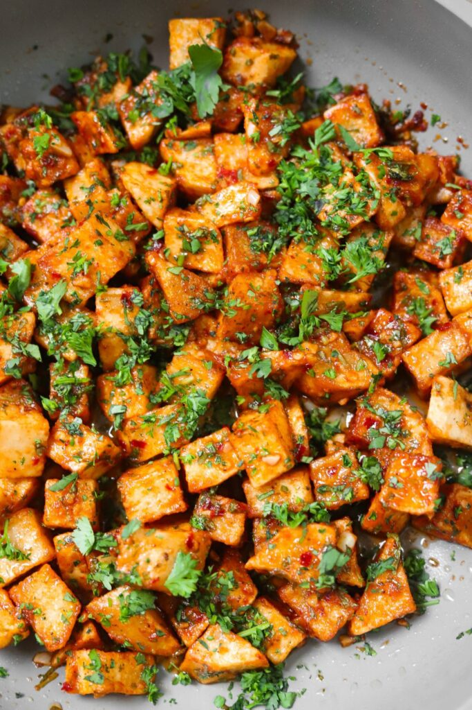
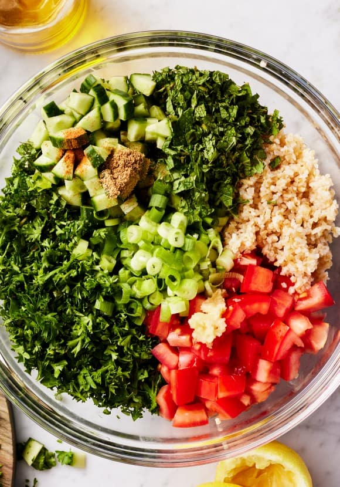

Arabic Recipe
- Kharouf Mahshi
- Boneless leg of lamb
- 2/3 cups Onion
- 2 tsp Coriander
- 1 tsp Candied Ginger
- 1 tsp Salt
- to taste Pepper
- 1 1/4 cup Cooked Rice
- 2/3 cup Pistachios
- 1/4 cup Almonds
- 1/2 cup Golden Raisins
- 1/3 cup Butter
- Batata Harra 
- olive oil
- butter
- tomato paste
- garlic
- red pepper flakes
- black pepper and salt
- cumin
- lemon juice
- cilantro
- Taboule 
- ½ cup fine bulgur wheat
- 4 firm Roma tomatoes, very finely chopped
- 1 English cucumber (hothouse cucumber), very finely chopped
- 2 bunches parsley, part of the stems removed, washed and well-dried, very finely chopped
- 12-15 fresh mint leaves, stems removed, washed, well-dried, very finely chopped
- 4 green onions, white and green parts, very finely chopped Salt
- 3-4 tablespoon lime juice (lemon juice, if you prefer)
- 3-4 tablespoon Early Harvest extra virgin olive oil
- Romaine lettuce leaves to serve, optional

Ingredients
Ingredients
Ingredients